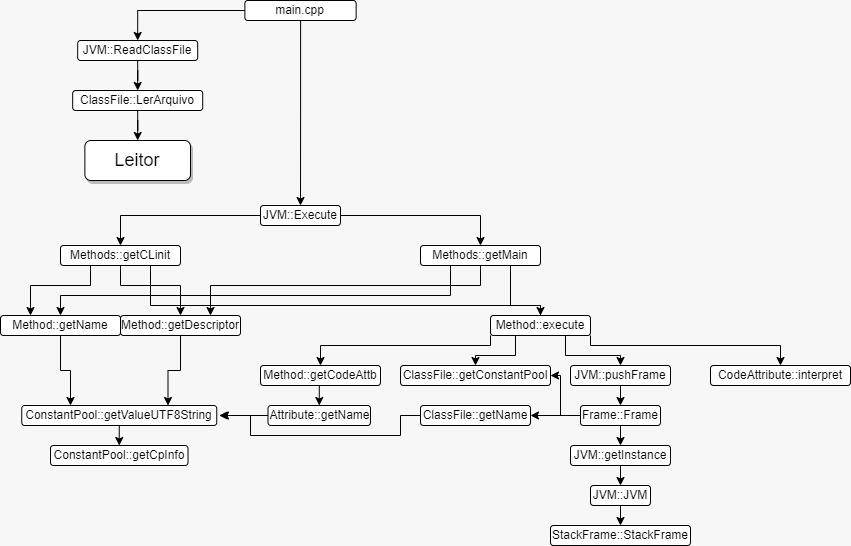

Obs: deve-se ter o make e g++
instalado no sistema.
Windows
Para chamar o leitor-exibidor:
make; .\JVM.exe read .\java<NomeDoArquivo>.class
argumento_opcional_com_nome_arquivo_output.txt
Para executar a jvm:
make; .\JVM.exe exec .\java<NomeDoArquivo>.class
Linux
Para chamar o leitor-exibidor:
make; ./JVM read ./java/<NomeDoArquivo>.class
argumento_opcional_com_nome_arquivo_output.txt
Para executar a jvm:
make; ./JVM exec ./java/<NomeDoArquivo>.class
Autores
- Caio Bernardon N. K. Massucato – 16/0115001
- Rafael Gonçalves de Paulo - 17/0043959
- José Vinícius Garreto Costa – 18/0123734
- Alice da Costa Borges - 18/0011855
- Lucas Vinicius Magalhães Pinheiro - 17/0061001
Atividades
-
- Caio Bernardon N. K. Massucato – 16/0115001
- Nota média da avaliação pelo grupo: 10
-
Contribuição:
- Programação
- Melhorias Leitor/Exbidor
-
- Rafael Gonçalves de Paulo - 17/0043959
- Nota média da avaliação pelo grupo: 10
-
Contribuição:
- Programação
- Gerenciou Git
-
- José Vinícius Garreto Costa – 18/0123734
- Nota média da avaliação pelo grupo: 10
-
Contribuição:
- Programação
- Definiu padrões de projeto
-
- Alice da Costa Borges - 18/0011855
- Nota média da avaliação pelo grupo: 10
-
Contribuição:
- Programação
- Organizou documentação
-
- Lucas Vinicius Magalhães Pinheiro - 17/0061001
- Nota média da avaliação pelo grupo: 10
-
Contribuição:
- Programação
- Editou vídeos
- Gravou vídeo final
Funcionalidades
Implementadas e Não-Implementadas:
Implementadas
- Leitor/Exibidor
- Gerência da pilha de frames
- Constant Pool
- Chamada de métodos
- Tratamento de exceções
Não-Implementadas
- Gerência de objetos, arrays, variáveis locais, operandos
- Interpretação das instruções
Link para documentação
Diagrama Lógico
